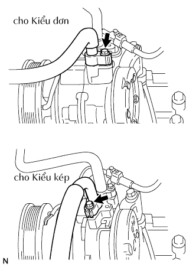
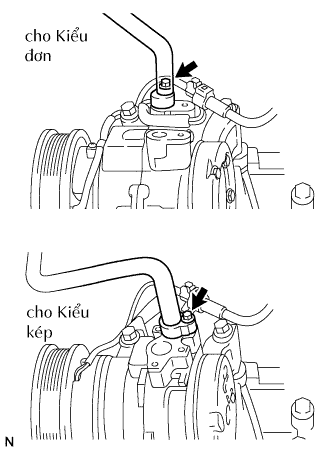

MÁY NÉN VÀ LI HỢP TỪ > THÁO RA |
| 1. XẢ GA ĐIỀU HOÀ RA KHỎI HỆ THỐNG |
Khởi động động cơ.
Bật công tắc A/C ON.
Vận hành máy nén của bộ làm mát tại tốc độ động cơ xấp xỉ 1,000 vòng/phút khoảng 5 đến 6 phút. Điều này tuần hoàn ga và thu hồi dầu máy nén nằm trong từng bộ phận về máy nén càng nhiều càng tốt.
Tắt động cơ.
Thu hồi ga của hệ thống từ các cổng phía cao và thấp áp bằng cách dùng máy thu hồi ga điều hoà và SST.
| 2. NGẮT CÁP ÂM RA KHỎI ẮC QUY |
| 3. THÁO ĐAI CHỮ V CHO QUẠT VÀ MÁY PHÁT |
 |
Dùng một chi tiết dạng lục giác như chỉ ra với mũi tên trong hình vẽ để dịch chuyển puli căng đai xuống dưới để giảm độ căng đai dẫn động. Sau đó tháo dây đai dẫn động.
| 4. THÁO ỐNG (MỀM) HÚT |
|  |
Tháo bu lông và ngắt ống hút ra khỏi máy nén.
Tháo gioăng chữ O ra khỏi ống hút.
| 5. NGẮT ỐNG XẢ GA ĐIỀU HOÀ NO. 1 |
|  |
Tháo bu lông và ngắt ống hút ra khỏi máy nén.
Tháo gioăng chữ O ra khỏi ống nạp.
| 6. THÁO CỤM MÁY NÉN ĐIỀU HOÀ |
Ngắt giắc nối.
 |
Nhả kẹp ra khỏi giá bắt bộ làm mát.
Tháo 4 bu lông và máy nén.